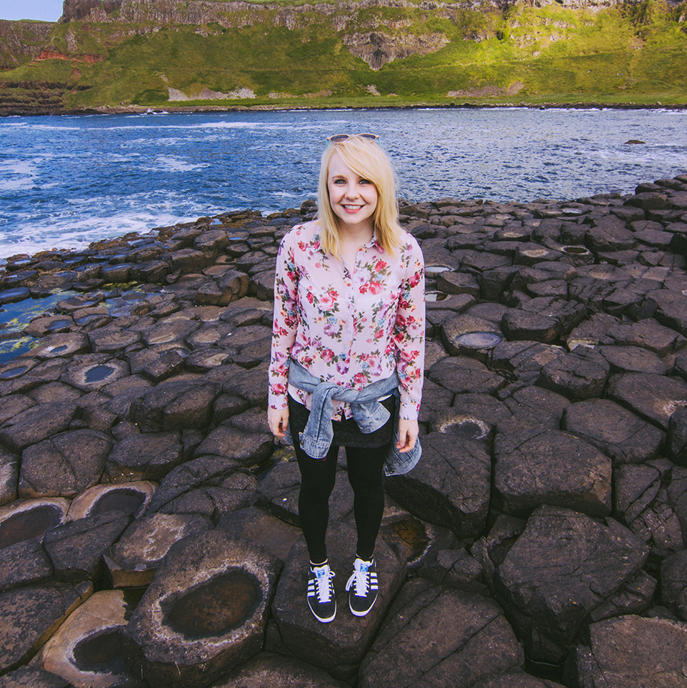

I'm Melissa. Nice to meet you.
I'm a Dutch/Northern Irish mongrel who tinkers with user experience and code in Rumble Labs. You'll often find me tweeting about design, dogs and Game of Thrones, or writing in my journal.
Hey, that's me exploring The Giant's Causeway
I Design
After graduating from Ulster University in 2013 with first class honours in Interactive Multimedia Design, I joined the talented team at Rumble Labs in Belfast.
By day I design and develop sites and apps for the web and occasionally dabble in branding and print design. Notebooks seem to be the perfect gift for me as mine quickly fill up with ideas, users flows and sketches.
You can learn more about my skills and experience by checking out my LinkedIn profile, or catch up with my latest design work on Dribbble.
I Photograph
When I'm not behind a screen, you might just find me behind a lens. I'll often create photo stories of my photography adventures. You can take a look at my photographs on my Flickr. I'll warn you though, it's mostly pictures of my dog.
I'm available for freelance photography work, if you're interested in working with me get in touch.
My 35mm prime lens is my favourite
And a Little More
You can often find me mingling with fellow designers and developers at local tech/design events in Belfast, including Refresh, Belfast Ruby and Ladies That UX.
In my spare time I also enjoy obsessing over cute animals, lifting weights and reading articles on Medium and Quora.
I also like meeting new people and receiving friendly emails, so don't be afraid to say hello!